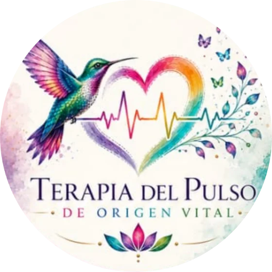

Las voces
Frases que escuchamos tanto que se volvieron nuestras: “no puedes”, “no es para tanto”, “tienes que aguantar”.
Psicóloga clínica · Psicoterapia integrativa · Presencial y online
Regresa a tu Yo Original
Un camino para identificar las voces, etiquetas y heridas aprendidas que te alejaron de tu esencia, y volver a vivir con mayor autenticidad, conciencia y sentido.


Sobre mí
Psicóloga clínica · Creadora de la Terapia del Pulso de Origen Vital · Céd. Prof. 11069167
«Nacemos originales, morimos siendo copias».
Desde pequeños recibimos mensajes sobre quiénes debemos ser, qué emociones podemos expresar y qué partes de nosotros deberíamos esconder para ser aceptados. Con el tiempo, muchas de esas voces se convierten en nuestra propia voz interior.
Mi trabajo consiste en acompañarte a descubrir qué partes de tu historia te pertenecen, cuáles fueron aprendidas o impuestas, y cómo recuperar la libertad de construir tu propia identidad.
La Terapia del Pulso tiene un origen personal. En una etapa de mi vida, mi esposo, Santiago, me ayudó a comprender algo que transformó mi manera de mirarme: yo no era un trastorno caminando por el mundo, ni una etiqueta diagnóstica. Era una persona, con una historia, emociones, capacidades, sueños y una identidad propia.
Me pregunté cuántas personas terminan definiéndose solo por sus diagnósticos o por lo que otros dicen de ellas. Esa inquietud me llevó a profundizar en distintas corrientes psicológicas para entender qué podía aportar cada una, y de esa integración nació la Terapia del Pulso de Origen Vital.
La terapia · ¿En qué se basa?
A lo largo de la vida vamos acumulando mensajes que no elegimos. La Terapia del Pulso te acompaña a reconocerlos para soltar lo que no es tuyo y reencontrarte con tu pulso vital.
Lo que nos aleja
Frases que escuchamos tanto que se volvieron nuestras: “no puedes”, “no es para tanto”, “tienes que aguantar”.
Nombres que nos pusieron —o que nos pusimos— y que limitan lo que creemos ser: “la fuerte”, “el problema”, “la sensible”.
Experiencias de dolor, abandono o trauma que dejaron huella en el cuerpo y en la forma de vincularnos.
Hacia dónde vamos
Vivir desde lo que de verdad sientes, piensas y necesitas.
Darte cuenta de tus patrones para elegir, en lugar de repetir.
Reconectar con aquello que hace que tu vida valga la pena.
El Pulso de Origen representa simbólicamente aquello que permanece en nosotros más allá de los papeles que interpretamos, las etiquetas que recibimos y las formas que aprendimos para sobrevivir: tus necesidades, valores, emociones y posibilidades de elección.
No se trata de regresar literalmente a quien eras antes, porque toda experiencia nos transforma. Se trata de recuperar la capacidad de decidir quién quieres ser a partir de lo que has vivido.
Es una metáfora terapéutica, no un concepto diagnóstico. Describe un marco de acompañamiento creado por mí, no una terapia con reconocimiento independiente en las principales guías de práctica clínica; sus recursos se inspiran en corrientes con distintos niveles de respaldo científico. Por eso la evaluación y las decisiones terapéuticas siempre se definen de forma individual y, cuando hace falta, en coordinación con otros profesionales de la salud.
El proceso
No se trata de usar todas las técnicas con todas las personas, sino de elegir los recursos según tu historia, tus necesidades y tus objetivos. El proceso es flexible y se adapta a ti.
Reconocer las voces aprendidas, las exigencias y las creencias que condicionan tu identidad.
Explorar cómo tu historia, tus relaciones y las experiencias dolorosas han influido en la forma en que te percibes.
Reconocer las emociones, necesidades, capacidades y partes de ti que han permanecido ocultas.
Cuestionar las expectativas, culpas y responsabilidades que asumiste sin que necesariamente te correspondieran.
Desarrollar habilidades para manejar emociones, afrontar situaciones difíciles y construir relaciones más sanas.
Fortalecer tu identidad, tus decisiones, tus valores y tu sentido de vida.
Mi propósito no es decirte quién debes ser. Es acompañarte a descubrir quién deseas ser cuando puedes escucharte sin el ruido de las voces ajenas.
Corrientes que integra
No buscaba reunir corrientes por el simple hecho de combinarlas, sino entender qué puede aportar cada una a tu proceso. Toca cada una para conocerla.
Ser reconocido como persona, no solo como diagnóstico.
Pone en el centro la dignidad, la autonomía y la capacidad de crecimiento, con una relación terapéutica basada en la empatía, la autenticidad y la aceptación. Es la base del vínculo: un espacio para explorar quién eres sin tener que cumplir expectativas para merecer respeto.
¿Para qué te sirve? Autoconocimiento, autoestima, aceptación personal y confianza para tomar decisiones.
Reconocer lo que sucede aquí y ahora.
Trabaja la conciencia de tus emociones, necesidades y formas de relacionarte, con diálogo terapéutico, polaridades, técnicas expresivas y ejercicios simbólicos, que pueden incluir el encuentro con tu infancia o adolescencia.
¿Para qué te sirve? Reconocer necesidades ignoradas, expresar emociones, identificar patrones y cerrar situaciones pendientes.
Vivir las emociones sin quedar atrapado en ellas.
La Terapia Dialéctico Conductual combina aceptación y cambio en cuatro áreas: atención plena, regulación emocional, tolerancia al malestar y efectividad interpersonal. Aporta las habilidades prácticas que convierten la comprensión en cambios cotidianos.
¿Para qué te sirve? Ansiedad, impulsividad, desbordamiento emocional y conflictos en las relaciones.
Encontrar sentido incluso en medio del sufrimiento.
Desarrollada por Viktor Frankl, usa recursos como el diálogo socrático, la desreflexión y, cuando es clínicamente apropiado, la intención paradójica. No justifica el sufrimiento: abre nuevas posibilidades después de lo vivido.
¿Para qué te sirve? Reconocer tus valores, recuperar dirección y construir propósitos ante el vacío o la pérdida de sentido.
Vivir con las pérdidas y reconstruir lo que cambia.
Acompaña la muerte y el duelo, pero también otras pérdidas: una separación, una enfermedad, una migración o un cambio de vida. Incluso el duelo por la persona que creíamos que seríamos.
¿Para qué te sirve? Reconocer y expresar el dolor, adaptarte a los cambios y reconstruir tu vida sin negar lo que fue importante.
La sombra, los arquetipos y las partes desconocidas de ti.
Explora la sombra (lo que rechazamos o escondimos, incluidas cualidades que nunca nos permitimos), los arquetipos (patrones simbólicos de la experiencia humana) y la individuación: una identidad más integrada.
¿Para qué te sirve? Comprender conflictos internos, cuestionar los personajes que aprendiste a representar y reconocer patrones repetitivos.
Comprender cómo el dolor pasado sigue afectando el presente.
Entiende las respuestas de supervivencia y fortalece la seguridad y el control personal. Sanar no significa obligarte a recordar o revivir: primero se construyen condiciones de seguridad, y se procesa cuando resulte adecuado.
¿Para qué te sirve? Identificar desencadenantes, disminuir la culpa y desarrollar recursos de seguridad y autorregulación.
Las historias que los trastornos nos cuentan
Una persona puede tener un diagnóstico, pero su diagnóstico nunca representa la totalidad de lo que es. Lo escuchamos como una historia que tu mente y tu cuerpo han tenido que contar para sobrevivir, y desde ahí buscamos nuevos caminos.
Áreas de atención
Psicoterapia para niños, adolescentes y adultos, y acompañamiento para parejas y familias. Integro herramientas de distintas corrientes para comprender tu historia, fortalecer tu identidad y desarrollar habilidades emocionales. Presencial en Atizapán de Zaragoza u online.
No tratamos una etiqueta; acompañamos a la persona que vive detrás de ella.
El Pulso de Origen Vital es una propuesta integrativa de autoría propia y no constituye un tratamiento independiente validado para todos los diagnósticos mencionados. La atención de condiciones específicas puede requerir tratamientos especializados basados en evidencia; cuando es necesario, trabajo en colaboración con otros profesionales.
Valoración y evaluación psicológica
Evaluación clínica y psicométrica para explorar de manera sistemática el funcionamiento psicológico, emocional, conductual y cognitivo de niños, adolescentes y adultos: fortalezas, dificultades, necesidades de apoyo, indicadores clínicos y posibles condiciones que requieren atención.
Ansiedad · depresión y estado de ánimo · indicadores de trastornos de personalidad · regulación emocional · autoestima y autoconcepto · indicadores de trauma y estrés psicológico.
Exploración clínica de TDAH y de TEA · atención y funciones ejecutivas · dificultades conductuales y adaptativas · necesidades de apoyo escolar y familiar.
Funcionamiento intelectual · capacidades cognitivas · fortalezas y debilidades cognitivas · necesidades educativas y de apoyo.
Dificultades emocionales · problemas de conducta · ansiedad y estado de ánimo · adaptación escolar · relaciones interpersonales · indicadores del neurodesarrollo.
Objetivo: una comprensión clínica integral que oriente las decisiones de atención, las recomendaciones y, cuando sea necesario, la referencia a especialistas.
Los instrumentos se eligen y aplican según sus requisitos técnicos, población destinataria y alcances interpretativos. Las técnicas proyectivas y expresivas no se usan como fundamento único para un diagnóstico. La evaluación de TDAH, autismo y otras condiciones puede requerir información de diversas fuentes y participación multidisciplinaria: ninguna prueba aislada es suficiente para confirmar un diagnóstico.
Psicología forense y peritajes psicológicos
Evaluación y elaboración de informes psicológicos con finalidad forense, para aportar información técnica sobre aspectos psicológicos relevantes en procedimientos legales, con objetividad, independencia, fundamentación metodológica y respeto a los derechos de las personas evaluadas.
La evaluación psicológica no sustituye la investigación de los hechos ni determina por sí sola responsabilidades legales; sus conclusiones se ajustan a los hallazgos, a la metodología empleada y a los límites de la competencia profesional.
Un informe clínico no constituye automáticamente un dictamen pericial: los requisitos, nombramientos y condiciones de participación dependen de cada procedimiento.
Consultar un peritajeConsulta individual
Sesión individual
$700 MXN
Si en la evaluación veo que te conviene otro tipo de atención, te lo digo con claridad y te oriento o trabajamos en coordinación con otro profesional.
Las sesiones son con cita previa y no son un servicio de atención inmediata. Cancelaciones o cambios con al menos 24 horas de anticipación.
Talleres
Experiencias grupales y vivenciales. Cupo limitado para cuidar la intimidad del grupo.
Pronto anunciaré nuevos talleres. Escríbeme para avisarte cuando abran inscripciones.
Agenda
Elige un día y un horario libres. Al reservar, el horario queda apartado para ti y te llega la confirmación por correo.
Testimonios
Preguntas frecuentes y condiciones
Es un enfoque psicoterapéutico integrativo que creé a partir de una convicción: somos mucho más que nuestros síntomas, diagnósticos, heridas y experiencias. Articula el humanismo, la Gestalt, Jung, la DBT, la psicología del trauma, la tanatología y la logoterapia alrededor de la reconstrucción de tu identidad, eligiendo los recursos según tu historia y tus objetivos. Es un marco de acompañamiento propio, no una categoría diagnóstica.
No. Puedes venir porque algo te duele, te confunde o quieres conocerte mejor. Y si ya tienes un diagnóstico, lo abordamos como una parte de tu historia, no como la totalidad de lo que eres.
Empezamos con una entrevista para conocer tu motivo de consulta, tus antecedentes, tus necesidades actuales, tus objetivos y posibles factores de riesgo. Si hace falta, uso instrumentos psicológicos como apoyo, sin que sustituyan la entrevista ni el juicio clínico. Con eso definimos si este servicio es adecuado para ti o si conviene canalizarte o trabajar en coordinación con otro profesional.
El alcance, los objetivos y la frecuencia de las sesiones se definen de manera individual, según tu motivo de consulta y tus necesidades. Lo vamos revisando juntos.
Sí. Para las sesiones en línea necesitas un espacio privado, una conexión estable y condiciones que cuiden tu confidencialidad, como usar audífonos.
Puedes pagar en efectivo o por transferencia. Para sesiones online, el pago se realiza antes de la sesión. (Ajustar según las formas de pago reales.)
Sí. Lo que compartas se trata con respeto y confidencialidad, según las obligaciones éticas y legales. Sus límites son: un riesgo grave e inminente para tu vida o la de otras personas, cuando la ley lo exija o cuando sea necesario coordinar tu atención con otros profesionales. En esos casos procuro informarte siempre que sea posible.
La psicoterapia no garantiza resultados específicos ni sustituye la atención médica, psiquiátrica u hospitalaria cuando se necesita. Tampoco reemplaza medicamentos: no suspendas ni modifiques un tratamiento sin consultar a quien lo indicó. El proceso pide tu participación activa, asistencia regular y comunicación honesta, y los avances varían en cada persona.
Este servicio no es de atención inmediata ni de emergencias. Si hay riesgo de suicidio, autolesión, violencia, abuso, intoxicación o cualquier peligro para la vida, llama al 911 o a la Línea de la Vida 800 911 2000 (24 h), acude a urgencias o pide apoyo a una persona de confianza. Avísame en cuanto puedas, pero no esperes una respuesta por mensaje o correo para buscar ayuda urgente.
Contacto
Si tienes dudas antes de agendar, escríbeme. Con gusto te respondo.
Mapa del consultorio